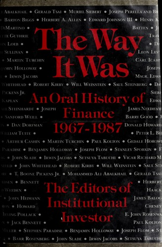

《往昔岁月》（The Way It Was: An Oral History of Finance 1967–1987）是美国权威金融杂志《机构投资者》（Institutional Investor）于1988年编辑出版的一部集体口述史，由威廉·莫罗出版社（William Morrow & Company）发行。该书不设单一作者，而是由杂志编辑团队对116位亲历那个时代的金融界领袖进行深度访谈，以第一人称的口吻记录他们对华尔街二十年变迁的亲历叙述。受访者涵盖花旗银行前CEO沃尔特·里斯顿（Walter Wriston）、大通曼哈顿前CEO戴维·洛克菲勒（David Rockefeller）、百博文证券CEO唐纳德·马龙（Donald Marron）等工业界、银行业和投资界的核心人物，构成了一幅横跨两个十年的华尔街群像。
这二十年是美国金融业从传统走向现代的关键转型期。1967年，华尔街还是一个由绅士协议和固定佣金率主导的世界，股票交易量有限，大型投资银行的运作依赖长期信任关系而非量化模型；到1987年，整个行业已面目全非——固定佣金制的废除（1975年）打破了旧秩序，垃圾债券（junk bonds）的兴起重塑了并购市场，指数套利、期权和衍生品工具将华尔街变成了一台运转不停的数学机器，与此同时，大型投资银行在兼并浪潮中相继消亡或蜕变。口述史的体裁赋予这本书独特的质感：读者看到的不是后见之明的历史总结，而是当事人在浪潮中的真实感受——那种对旧规则消失的惋惜、对新机会的贪婪以及对自身判断的自信与迷茫。
这本书出版后成为《财富》杂志（Fortune）书友会推荐书目，在华尔街从业者中广泛流传。《财富》的书评称其"以精彩的故事体方式，生动地捕捉到了过去二十年间华尔街的喧嚣与激荡"。作为一部口述史，它没有统一的论点，而是通过116个声音的汇聚，呈现出那个时代令人目眩的多面性。
对于今天的读者而言，《往昔岁月》的意义在于它记录了一个已经永久消失的金融世界的晚钟。书中人物亲历的变革——金融自由化、交易技术化、投行公司化——奠定了此后三十年华尔街的基本格局，也埋下了2008年金融危机的深层根源。直接聆听那一代亲历者的声音，比任何二手叙述都更能理解变化的速度与代价，以及在剧变时代中判断力与运气各自扮演的角色。